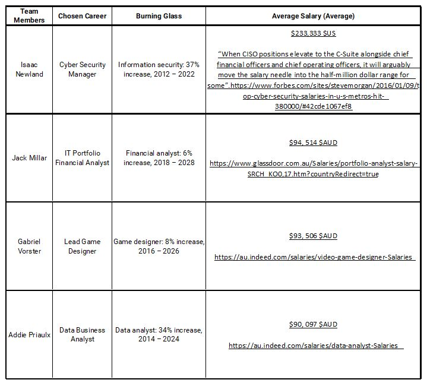

Group Processes:
Our team has worked efficiently, we have communicated well with each other and have openly discussed our ideas and plans.
For this next assignment we will be creating a project from an entirely new idea and perspective. This new project consists
of the 4 hard-working members of Fully Developed creating an app; a tracking system for mental and emotional health.
We also have included the use of WhatsApp in our communication process for A3 to allow group voice calls to discuss and
prioritise our tasks.
Career Plans:

Isaac Newland | Cyber Security Manager
Isaac’s interest in the role of a Cyber Security Manager presents as the most lucrative of the Fully Developed team.
The sector has seen the strongest growth year-on-year, 37% since 2012 (expected to continue until 2022), and currently short near
3 million professionals.
As technology spills into all facets of our lives, at lightning speed, the inherent risk of cyber threat grows respectively.
The complexity within the role of a Cyber Security Manager would vary greatly from one to the other, dependant on the needs of
the department, business, industry they’re serving; the perceived threat to a bank would vary greatly to that of Tesla.
The skills required of Isaac to work in cyber security are of far greater complexity than that of his team mates; Isaac would be expected
to prevent, identify, disable and recover from potential threats, in place to protect data, like that of his Fully Developed team mates,
while also protecting others data from them!
Addie Priaulx | Data Business Analyst
Gabriel Vorster | Lead Game Designer
Jack Millar | IT Portfolio Financial Analyst